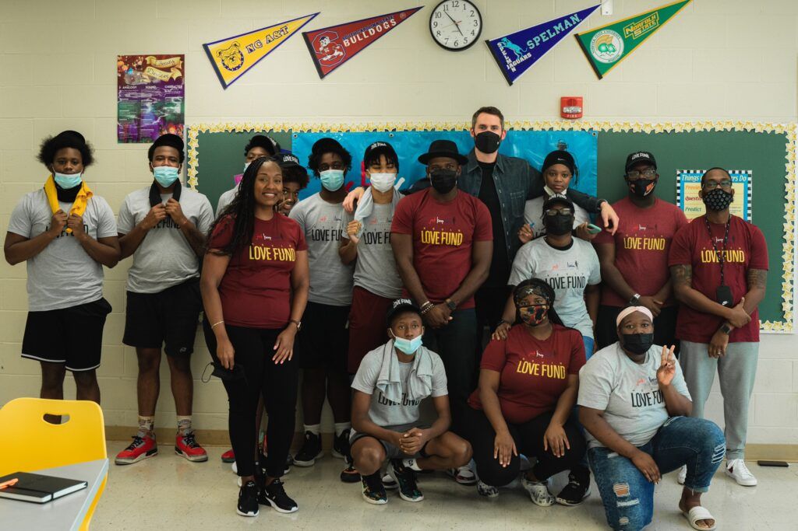

Mental Health Education
Age-appropriate curriculum helps students build emotional awareness, resilience, empathy, and self-compassion.
Featured Partner Spotlight
Resource Spotlight
The Kevin Love Fund helps young people, educators, athletes, and communities care for mental health through education, storytelling, advocacy, and accessible resources.
Mental Health Organization
Creating equity between mental and physical health.
The Kevin Love Fund works to create equity between mental and physical health through education, storytelling, advocacy, and accessible mental health resources for young people, educators, athletes, and communities.
Founded by NBA player Kevin Love, the organization helps normalize conversations surrounding mental health and expand access to the tools and support people need to care for their emotional well-being. Through educational curriculum, community partnerships, advocacy, and youth engagement, the fund empowers individuals to prioritize their mental health and support those around them.
Explore the Kevin Love Fund's mission, mental wellness resources, and educational work.
Education, Stories & Support
Age-appropriate curriculum helps students build emotional awareness, resilience, empathy, and self-compassion.
Open, honest stories encourage vulnerability, challenge stigma, and remind people that they are not alone.
Resources for students, educators, athletes, and families make practical support easier to find.
Why Broad Shoulders Initiative Supports Them

Broad Shoulders Initiative shares the Kevin Love Fund's belief that no one should struggle alone. Through storytelling, advocacy, and community discussion, Broad Shoulders Initiative aims to create safe spaces where students feel understood and supported.
We are proud to highlight the Kevin Love Fund as a trusted resource for students, families, educators, and athletes.
Future Initiative
The Broad Shoulders Initiative is excited to continue growing its relationship with the Kevin Love Fund. One of our long-term goals is to explore opportunities to bring the Kevin Love Fund's educational curriculum into local schools within the Poway Unified School District. By introducing engaging, age-appropriate mental health lessons to elementary and middle school students, we hope to help foster emotional resilience, reduce stigma, and encourage healthy conversations about mental wellness from an early age.
This is a future goal and does not represent an existing school partnership.
Kevin Love Fund Resources